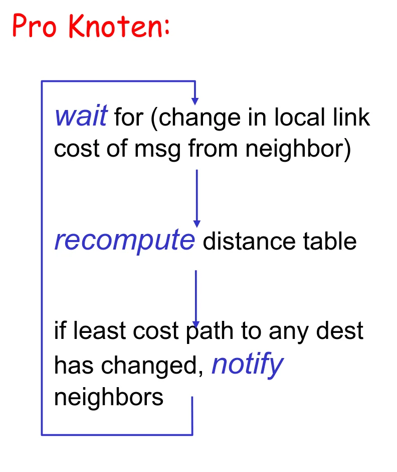
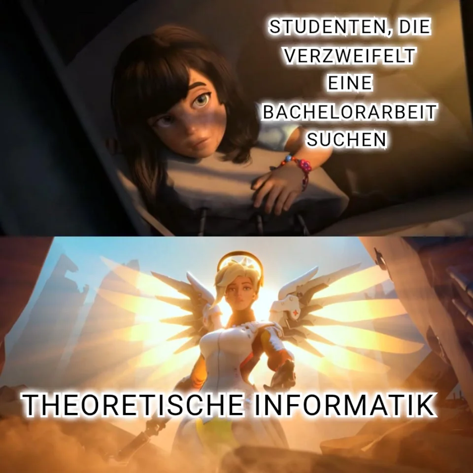

Dopsball Report: WiSe 2025/2026 Part 2
February

The ways of elevators are inscrutable. Some people swear that certain elevators are faster than all the others. Others, on the other hand, actively avoid elevators because they always seem to take the slowest possible route. But everyone agrees that, for the most part, elevators are simply broken.

Another Grabowsky meme. But this one is particularly creative, implemented as a Grabowski automaton. Bonus points for the fact that only the “still” state is accepted.

Some people realized that Grabowsky was not that bad. As we will see soon, they were not the majority.

Emil Hartenstein is a pretty good instructor! If you want to learn something about DS, then you should go to him. The meme features the mathematical notation of DS, which can be pretty hard to understand for the first semester.

It is funny because it is true. Nothing more to say here. I give it a 8/10.

I didn’t even know that Emil Hartenstein had such a good blackboard writing.

I give it a 10/10. Why, you may ask? You should have been there! Every single time, Lucas heares anything about DS, he starts to fall into madness. At this point, I am really worried at his mental health.

Did you knew that every single meme you just saw was posted on the same day and by different people? What the hell happened here?

Oh god, how much I hate people who are proud of there failure quota. The title is “POV: letztes Jahr sind 70% durchgefallen (lass dir nicht erzählen du wärst in einer Psychose)”, which references BKS and its extremly high failure rate. Nice hit by the way!

„Ich checke es nicht. Ich bin zu dumm dafür.“ – Bitte keinen Namen
„Es ist nicht Grabowsky, daher eine eins.“ – Lovis

The title of this meme references the Ernst-Grube-Halle. For not that well known reasons, the auditorium building was closed as we wrote our exams. Therefore, we needed to write all our exams inside a sports hall called Ernst-Grube-Halle. The meme itself references DS, which was a really challenging module for many students in the first semester. I think it was the most discussed module inside the “Offene Inforaum” at the time.

Grabowski and predicate logic are two things that you can not separate! It also features Lindemann by the way, because every good Dopsball meme references Lindemann.

This meme shows Stadler, who frequently includes beer into his ADS1 and ADS2 presentations. This had its peek in ADS2 across multiple presentations. I think its a cool gag.

Kliem is currently completly underhated, for multiple reasons. One of the reasons is here script for the module “Einführung in die Wahrscheinlichkeitstheorie”. The script includes multiple questionable notes and shows frequently her bad handling of LaTeX. Using square root instead of checkmark is the easiest to spot.

Some peopel speak, but don’t say anything! That’s exactly the case with the module “Software Engineering”. One of the upsides of Kanban was described as “Optimierung der Effiziens”. Wow! Who had fought that optimising the efficiency was an upside? I think that “Nachtschicht” has more to do with the creators sleep cycle then with the course it references itself. I could not find it in any slides inside the course, but maybe I missed it.

Grabowsky somewhere said “Anton ist Mörder”, and now somehow everything which showcases Grabosky contains this sentence. I don’t now how this started and at this point, I am afraid to ask. Generelly speaking, I think that Grabowsky is just completly overhated. Yes, his lectures are bad. Yes, his exams are hard. But they are not THAT bad and hard to deserve that much hate. At least he tries to create his exams in a way that as many students as possible pass them, even if he fails at that.

This meme covers the same topic as the last.

I love it! This meme references the agile manifesto. It wonderfully shows how few meaning is inside the manifest.

The prof creates a lot of stuff with ai. He starts every single lesson with a bit of programming teaching and then continues to ask ai for the solution. Teaching basic programming skills is really good, I simply wish he wouldn’t ask a ai for the solution. It is only so important in the first case because others – ahem Zeckzer – completly fail at teaching us these skills, which forces him to repeat some content. Besides that, he also creates a lot of images for his slides with ai, and you can easily spot it. It was really bad at the beginning, as you can see in the meme. Yes, that image was really part of the slides! However, it should be noted that he used less and less ai in the end of the course.

Nicht ist bestätigender, als eine Biene vom Kontrolleur neben seine Lösung gemalt zu bekommen.

Six-Seven! God, I hate it! Even through I only rate memes from 1 to 10, this gets a straight 0.

What the hell, Dr. Kliem? How can you cram a ton of graphs onto two pages of the lecture notes and then just expect students to understand them and get something out of it? I don’t get it, and I doubt Kliem does either.

There are only two options here: either Lindemann wrote these comments himself, or someone tried to troll him or being overly sarcastic. There is no possibillity where these comments are real. They sound like if you were in third class and your class teacher needed to say something good about you in the final text you received. It should be noted that both comments are cut off in the middle, so who knows in which tone they continued?

Unfortunately, I already visited DS last year, but this sound totaly like Grabowsky. He does not speak German nativly and therefore has often grammar or writing issues. But again, no hate for him. It can be really difficult to learn another language and I understand that he has his issues with German. On the other side, I also understand the students that suffer because of his bad lectures and task assigments. I just wish that he would give his texts to a SHK to check for easy mistakes.

Lindemann’s pseudocode is simply not readabel. When being confronted why the pseudo code is so bad, he just said that this
This is my favourite meme ever posted on r\dopsball, hands down! Portraying Lindemann as a devil is … kinda fitting? The shot of the summoning is really well made and must have taken a lot of time. Additionally, the title “Beschwörung auf Bätschlor-Niveau” (note: contains saxon spelling, eng.: summoning worthy of a bachelor’s degree) is a nice reminder of his infamous sentence: “Das ist eine Antwort auf Bachelor-Niveau”.
This was, what one of the comments had to say:
ᛚᛟᚱᛖᛗ ᛁᛈᛊᚢᛗ
LINDEMANN ᛞᛟᛚᛟᚱ ᛊᛁᛏ ᚨᛗᛖᛏ, ᚲᛟᚾᛊᛖᛏᛖᛏᚢᚱ ᛊᚨᛞᛁᛈᛊᚲᛁᛜ ᛖᛚᛁᛏᚱ, ᛊᛖᛞ ᛞᛟᛗ ᚾᛟᚾᚢᛗᛁ ᛖᛁᚱᛗᛟᛞ ᛏᛖᛗᛈᛟᚱ ᛁᚾᚢᛁᛞᚢᚾᛏ ᚢᛏ ᛚᚨᛒᛟᚱᛖ ᛖᛏ ᛞᛟᛚᛟᚱᛖ ᛗᚨᚷᚾᚨ ᚨᛚᛁᚲᚢᛁᚨᛗ ᛖᚱᚨᛏ, ᛊᛖᛞ ᛞᛟᛗ ᚢᛟᛚᚢᛈᛏᚢᚨ. ᚨᛏ ᚢᛖᚱᛟ ᛖᛟᛊ
ZWEITVERSUCH ᛖᛏ ᚨᚲᚲᚢᛊᚨᛗ ᛖᛏ ᛃᚢᛊᛏᛟ ᛞᚢᛟ ᛞᛟᛚᛟᚱᛖᛊ ᛖᛏ ᛖ ᚱᛖᛒᚢᛗ. ᛊᛏᛖᛏ ᚲᛚᛁᛏᚨ ᚲᚨᛊᛞ ᛞᛟᛗ
4.0 ᚢᛟᛚᚢᛈᛏᚢᚨ. ᚨᛏ ᚢᛖᚱᛟ ᛖᛟᛊ ᛟᛞ ᛏᛖᛗᛈᛟᚱ ᛁᚾᛟᛞ ᛏᛖᛗᛈᛟᚱ ᛁᚾ
March

Are you trying to get into a course? Maybe something practical? Well, I wish you the best of luck, because your chances of getting in are very, very slim. Writing your bachelor’s thesis in theoretical computer science is probably the best thing you can do.